|
ORGANIZING A PHILATELIC EVENT AND EXHIBITING PHILATELIC SITES AT EFIRO 2008 |
About two years passed since, on behalf of the Philatelic Webmasters Organization (PWO), I organized one of the events at the World Philatelic Exhibition EFIRO 2008. Because the impressions are still present in my mind, but the less important things hopefully evaporated, I try to share them with you, before they get lost.
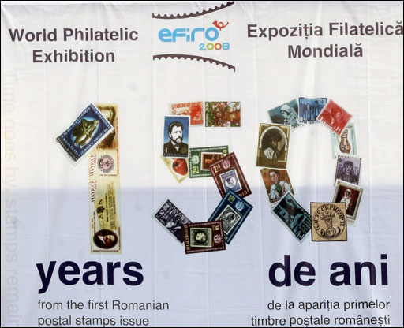
May I remind you that between 20 - 27 June, Bucharest, the capital of Romania, hosted, at the big exhibition center Romexpo, the World Philatelic Exhibition “EFIRO 2008”.
The exhibition celebrated 150 years from the issuing of the first Romanian postal stamps, the famous “Bull Heads”. It was the most important philatelic event of the last 50 years or more that took place in Romania. 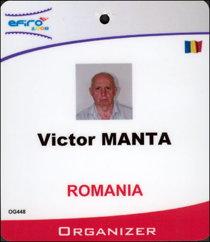
The exhibition was organized by the Romanian Post Office together with the Romanian Philatelic Federation, under the patronage of Fédération Internationale de Philatélie (FIP), of the International Association of Philatelic Journalists (AIJP) and also under the high patronage of the Romanian Presidency.
As a member of AIJP, I participated in the AIJP Congress, representing there the PWO, and I gave a speech about the philatelic web mastering. I can still remember that I was pleasantly surprised by the Romanian participants, who strongly applauded my short introductory part presented in Romanian language, which I speak fluently. By the way, this could be the possible reason why the OC printed on the above card Romania, instead of Switzerland, something that I actually appreciated, as well as the entire, enormous work of the OC - thank you all a lot! Eventually click here to acces the web page on the EFIRO 2008 site, where was announced the PWO presentation of philatelic web sites.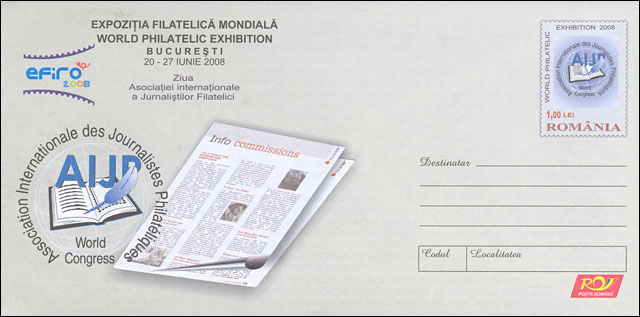
As mentioned, the Philatelic Webmasters Organization, in collaboration with the AIJP and the OC, has organized at EFIRO 2008 a presentation of excerpts from worldwide philatelic websites devoted to Romanian philately. The webmasters of these sites were contacted by the PWO and they kindly accepted to participate in this important philatelic event. The presentation took place at one of the best locations at EFIRO 2008, in the vicinity of the Court of Honor and of the Philatelic Museum, on a surface of 45 m2. Please click on the poster shown below to watch the presentation of web sites. It opens in a new window; please note that the size and the resolution are adapted to a TV screen but are perfectly compatible with modern computer monitors.
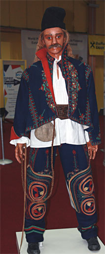
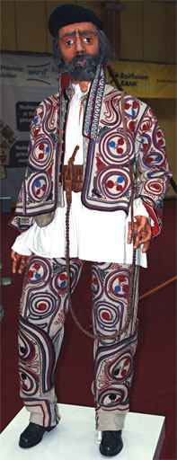
The participating web pages could deal with any chapter of the rich Romanian philately. They contained scanned images of philatelic material, explanatory text and captions. The accepted languages for the text and captions were English, French, German and Romanian. Unlike on other, similar occasions, the participation in the presentation was free of charge. It was not required that the participants are members of official philatelic organizations either.
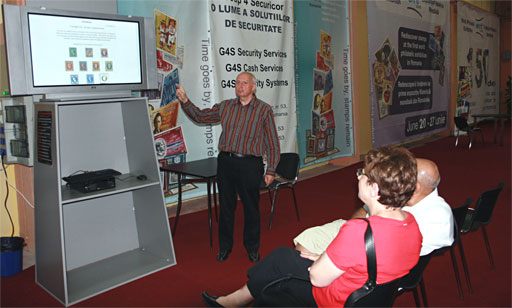
There was quite a lot of publicity for EFIRO 2008 in the written and spoken Romanian media but nevertheless the number of visitors was, as far as I could see, rather low. A reason surely were the very high temperatures for an end of June, approaching the 40 degrees Celsius. Another one was the small number of persons who still collect stamps in Romania, something that is generally known and that isn't necessarily something specific for this country.
After having installed, in the first day of the exhibition, the presentation on the computer (the black box shown above, under the screen), and having replaced an analogue signals cable with a digital one (bought in Switzerland), my main job was to explain to the interested visitors what was happening on the big TV screen. My first "victims" were my wife and the friend who waited for us at the airport and who drove us directly to the exhibition.
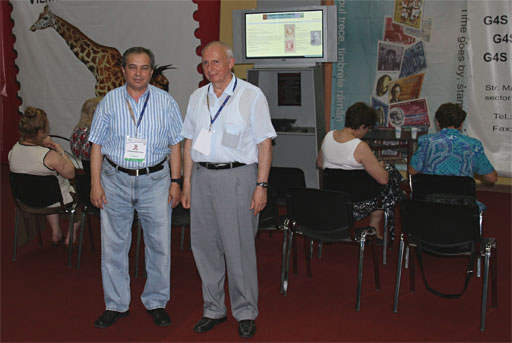
I needed a certain time to adjust to the wishes of different visitors (from Romania and from abroad) and to sort out those of them who had non-related interests. The questions that came often were about where is it possible to sell some inherited collections and how to find out the values of the stamps. Fortunately, there were enough people interested in more general aspects of philately, and among them, of course, the then President of the Romanian Philatelic Federation, Mr. Leonard Pascanu, shown above on the left, whom I met a few days after the opening.
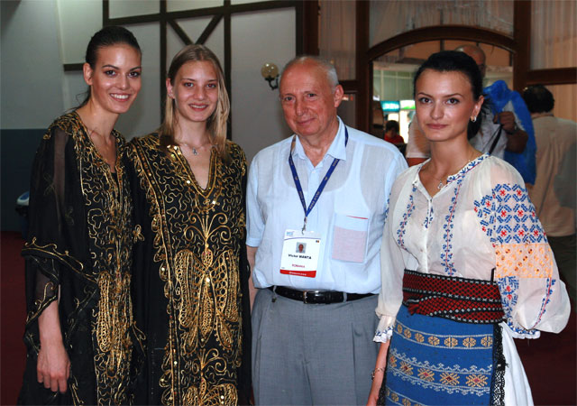
I had also some less "job related" contacts, for example with the nice and friendly hostesses of the exhibition, one of them being dressed in a beautiful Romanian costume. They made me quickly forget some tensioned relationships that I noticed between the Romanian Post and some philatelists, as well as between some Romanian philatelists. Anyway, many philatelists have told me that they have never seen before an exhibition of a such high level, from which they have learned a lot, even if for the time being they cannot compete with the exhibits presented in the competition.
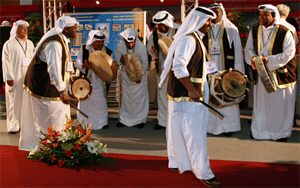
I could also enjoy some less usual events, like the dance displayed above, with those smiling dancers from a country that I have, unfortunately, forgotten. Before the spectacle I spent some good time in the company of two philatelists who participated in the presentation of Romanian websites, Mr. Dan Dobrescu and Mr. Fery Ambrus. This is the right moment to thank to all ten philatelic webmasters who have contributed with their pages to the presentation of web sites at EFIRO 2008.
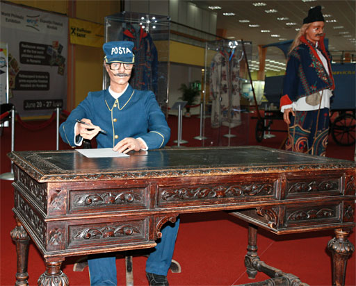
Some historical exhibits were remarkable, like the one presented on the above picture. Please note that all pictures were taken with my digital camera (thanks, Canon, it has never left me in the lurch).
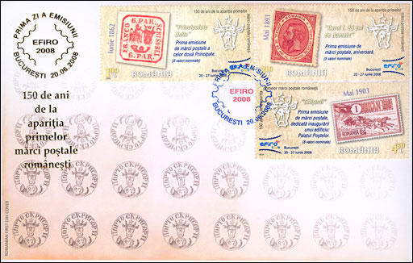
Of course I seized the opportunity and I bought some stamps, and other philatelic material that was issued on this occasion, from which I show you only two First Day Covers. I liked the quality and the presentation as well of the stamps as of the FDCs themselves. Now they are part of my collection of Romanian stamps and I look at them sometimes with a certain nostalgia.
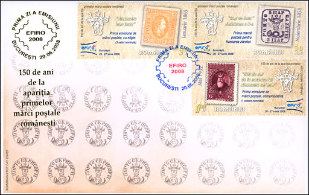
The FDCs were sold by the Romanian Post inside the exhibition, at a boot where the about 10 years old son of the female salesperson gave me some very amusing advice concerning stamp collecting. I couldn't oversee the fact that, due to the reduced number of visitors, the number of buyers was also quite small.
All in all, it was an interesting, even if a tiring, experience. The Philatelic Webmasters Organization could demonstrate this way what can practically do just a single person, with some IT skill, and with the contribution of interested stamp collectors and philatelic webmasters, members of the PWO. Due to a relatively short collaboration with AIJP, and thanks to the resulted goodwill of the local OC, I was able to organize an event, and to present in a world class philatelic show an exhibit that popularized the spontaneous movement of philatelic webmasters, a movement that is totally ignored by the FIP since 2002, the year of its last web sites competition. Hopefully, one day this will change!
| Published:
03/11/10. Revised: 08/22/10. Copyright © 2010 by Victor Manta, Switzerland. All rights reserved worldwide. |